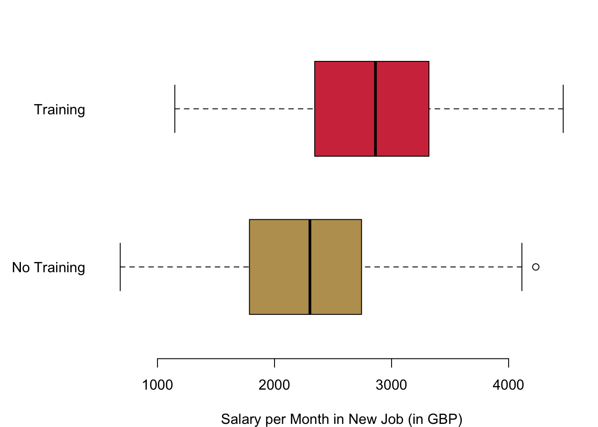

Chapter 10 Multivariate Regression and Heterogenous Treatment Effects
10.1 Analysing Experimental Data Revisited
To analyse experimental data, we so far did an easy calculation. We subtracted the average of the control group from the average of the treatment group. It turns out, that you can analyse experimental data with the regression framework from our second section in this class, too.
Let us take a look at this comparison with an example. We want to understand the causal effect of unemployment training. For this purpose, I generated some artificial data for illustration—so no real life data today. In our scenario, people have been unemployed for three months. After three months, we randomly assign a treatment. Half of the unemployed will get a four weeks class that improve on their IT skills. The other half continue in the unemployment programme as is. The outcome we are interested in is the monthly income six months into the new job. This is the result from the (hypothetical) experiment.

As you can see, there is indeed evidence that the training did have an effect. How again did we get to the effect that is caused by the training for the unemployed? We simply calculated the mean of both groups and subtracted them from one another. So we take the average monthly income after 6 months in the new job of those who participated in the training 2850.1 GBP and subtract from it the average monthly income after 6 months in the new job of those who did not participate in the programme 2271.81 GBP. The difference between the two is our causal effect of the programme:
mean(reg.dat$wage[reg.dat$treat == 1]) - mean(reg.dat$wage[reg.dat$treat == 0])## [1] 578.2929But we can get to this result also with a regression analysis:
regression.result <- lm(reg.dat$wage ~ reg.dat$treat)
summary(regression.result)##
## Call:
## lm(formula = reg.dat$wage ~ reg.dat$treat)
##
## Residuals:
## Min 1Q Median 3Q Max
## -1701.90 -494.83 22.38 471.43 1960.42
##
## Coefficients:
## Estimate Std. Error t value Pr(>|t|)
## (Intercept) 2271.81 29.28 77.58 <2e-16 ***
## reg.dat$treat 578.29 41.41 13.96 <2e-16 ***
## ---
## Signif. codes: 0 '***' 0.001 '**' 0.01 '*' 0.05 '.' 0.1 ' ' 1
##
## Residual standard error: 654.8 on 998 degrees of freedom
## Multiple R-squared: 0.1634, Adjusted R-squared: 0.1626
## F-statistic: 195 on 1 and 998 DF, p-value: < 2.2e-16Why do we get to the same results with both ways of calculating it? Remember that for the regression we are calculating the following regression model
\[ Y(X) = \alpha + \beta X + \epsilon. \] We interpreted the estimate of the parameter \(\hat\beta\) as follows. It is the change of the result in \(Y\) if we change the value of \(X\) by one unit. In our context this means the change from the control to the treatment group. Let us consider the effects for the two groups, the estimated outcomes in the treatment group \(\widehat{Y(X=1)}\) and the estimated outcomes in the control group \(\widehat{Y(X=0)}\):
\[ \widehat{Y(X = 1)} - \widehat{Y(X=0)} = (\hat\alpha - \hat\beta) - \hat\alpha = \hat\beta. \]
So, indeed, the estimated difference between the two outcomes boils down to the estimated parameter \(\hat\beta\).
10.2 Controling for Confounders
OK, so the difference between the control group and the treatment group can also be calculated with a regression. Fancy enough. But why going through all this trouble if we can simply subtract the means of two groups? Isn’t that much more easy?
Knowing how to calculate causal effects with the regression framework can be useful in different ways. Let us begin with the problem of confounders. Remember that for our estimator to work, we had to make an important assumption: the treatment assignment really has to be random in both groups. If the assignment is not fully random and the outcome depends on another variable, then we run into problems.
In the context of our running example, we might have collected information on other variables. For example, we recorded participants’ gender and also the number of years they spent in education, which in effect measures how long they spent in school or university.
summary(lm(reg.dat$wage ~ reg.dat$treat + reg.dat$female))##
## Call:
## lm(formula = reg.dat$wage ~ reg.dat$treat + reg.dat$female)
##
## Residuals:
## Min 1Q Median 3Q Max
## -1757.34 -496.63 23.27 471.01 1906.07
##
## Coefficients:
## Estimate Std. Error t value Pr(>|t|)
## (Intercept) 2326.16 35.86 64.867 < 2e-16 ***
## reg.dat$treat 579.37 41.30 14.030 < 2e-16 ***
## reg.dat$female -107.84 41.30 -2.611 0.00916 **
## ---
## Signif. codes: 0 '***' 0.001 '**' 0.01 '*' 0.05 '.' 0.1 ' ' 1
##
## Residual standard error: 652.9 on 997 degrees of freedom
## Multiple R-squared: 0.1691, Adjusted R-squared: 0.1675
## F-statistic: 101.5 on 2 and 997 DF, p-value: < 2.2e-16summary(lm(reg.dat$wage ~ reg.dat$treat + reg.dat$female + reg.dat$education))##
## Call:
## lm(formula = reg.dat$wage ~ reg.dat$treat + reg.dat$female +
## reg.dat$education)
##
## Residuals:
## Min 1Q Median 3Q Max
## -1405.03 -267.08 -0.94 259.26 1150.44
##
## Coefficients:
## Estimate Std. Error t value Pr(>|t|)
## (Intercept) 64.284 57.014 1.128 0.260
## reg.dat$treat 539.729 24.549 21.985 <2e-16 ***
## reg.dat$female -38.913 24.589 -1.583 0.114
## reg.dat$education 154.577 3.614 42.770 <2e-16 ***
## ---
## Signif. codes: 0 '***' 0.001 '**' 0.01 '*' 0.05 '.' 0.1 ' ' 1
##
## Residual standard error: 387.9 on 996 degrees of freedom
## Multiple R-squared: 0.7071, Adjusted R-squared: 0.7062
## F-statistic: 801.4 on 3 and 996 DF, p-value: < 2.2e-16We observe the effects from this omission in the two regressions that we can run. First, we are only adding the variable for gender. The variable is not significant, so there is no evidence that we have a systematic effect. The randomization of the treatment worked well.
Things are different when we also add the variable on education. Indeed, the level of education does have an effect on the outcome. For some reason, when designing the experiment there was a mistake in the randomisation of our treatment and in result we do have a bias. If we only use the difference in means estimator, we would have missed this bias. Now that we include education in our regression analysis, we can control for it. In result, the effect from our treatment diminishes is quite strongly.
10.3 Treatment Heterogeneity
The other area where the regression framework is really useful is in the context of treatment heterogeneity. Treatment heterogeneity describes the situation where the treatment you are assigning might have different effects on different groups.
For example, in our experiment we could believe that retraining has different effects on different age cohorts. For anybody below 50, IT skills are quite normal and employers would expect that they can all handle a computer well. But what about those who did not grow up with a computer and are 50 years or older? For them, IT skills are much more rare and having this extra training under the belt might give you a real advantage.
How can we express such a relationship with a regression equation? We not only include the terms for the treatment and also the age, but we also multiply the two variables and a parameter we estimate along. For our example, the regression equation would look like the following.
\[ \text{Income} = \beta_0 + \beta_1 \text{Training} + \beta_2 \text{Over 50} + \beta_3 \text{Training * Over 50} + \beta_4 \text{Female} + \beta_5 \text{Education} \]
How do we interpret this result for the resulting regression equation? The coefficient \(\beta_3\) is activated if both of the data equal \(1\). So only if we observe somebody over \(50\) who receives the treatment will we actually notice the impact of the estimated parameter \(\beta_3\) on our outcome. If either of the two variables is \(0\), there will be no effect from \(\beta_3\) on the income.
- If the age is below \(50\) and this variable equals \(0\), the whole product term equals 0.
- Likewise, if there is no treatment, the whole product term is \(0\) as well.
Overall, we will be able to make the following statement. In addition to the normal treatment effect that we already observe from \(\beta_2\), is there also an additional difference in the treatment for those who are older than 50 years?
# 3 Treatment Heterogeneity
regression.interaction.result <- lm(reg.dat$wage ~ reg.dat$treat*reg.dat$age.50plus + reg.dat$female + reg.dat$education)
summary(regression.interaction.result)##
## Call:
## lm(formula = reg.dat$wage ~ reg.dat$treat * reg.dat$age.50plus +
## reg.dat$female + reg.dat$education)
##
## Residuals:
## Min 1Q Median 3Q Max
## -1401.82 -257.81 1.11 263.65 1080.25
##
## Coefficients:
## Estimate Std. Error t value Pr(>|t|)
## (Intercept) 55.588 57.942 0.959 0.338
## reg.dat$treat 418.075 34.812 12.009 < 2e-16 ***
## reg.dat$age.50plus -22.687 34.185 -0.664 0.507
## reg.dat$female -36.905 24.119 -1.530 0.126
## reg.dat$education 155.954 3.557 43.841 < 2e-16 ***
## reg.dat$treat:reg.dat$age.50plus 240.940 48.353 4.983 7.38e-07 ***
## ---
## Signif. codes: 0 '***' 0.001 '**' 0.01 '*' 0.05 '.' 0.1 ' ' 1
##
## Residual standard error: 380.4 on 994 degrees of freedom
## Multiple R-squared: 0.7188, Adjusted R-squared: 0.7174
## F-statistic: 508.2 on 5 and 994 DF, p-value: < 2.2e-16Taking a look at the regression results, what can we learn? First of all, we see that apparently controlling for this interaction term was really necessary and brought our overall treatment effect baseline treatment effect highly up. It is at 418 GBP and we are quite certain that it is not just random coincidence. Next, just the age does not make any big difference on the income in our example. Neither does actually the difference between men and women. However, education matters—for every extra year that you spent in education you will earn 156 GBP per month more.
Finally, let us also take a look at the interaction turn. We learned that for everyone who is over 50, going through the training gives them an additional advantage of 241 per month. This effect is significant as well, so that we can be quite certain that in the larger population there is an effect that is different from zero.
In sum, those who are below \(50\) and go through the IT training can expect an income increase of 418 GBP per month. In addition, those who are older than \(50\) can add an extra 241 GBP to this baseline treatment effect summing to overall 659.
Let me explain you this interaction effect in a quick video again.
By the way, here is the ‘real’ data generating process that I defined to get to our data. You can clearly see that all our estimates of the treatment effect are off if the model is not appropriate—be it with a simple calculation of the difference in means or ‘wrongly’ specified regression models. We only get regression results close to the ‘real’ coefficients in the data generating process if we correctly specify the regression equation.
# Explanatory Variables
education <- sample(seq(9, 20), 1000, replace = TRUE)
treat <- c(rep(1, 500), rep(0, 500))
age.50plus <- sample(c(0, 1), replace = TRUE, 1000)
female <- sample(c(0,1), 1000, replace = TRUE)
# Outcome
wage <- education * 160 + treat * 400 + age.50plus*treat*250 + rnorm(1000, 0, 400)10.5 Reading for This Week
For this last week, please read p.161–181 in Imai (2018).